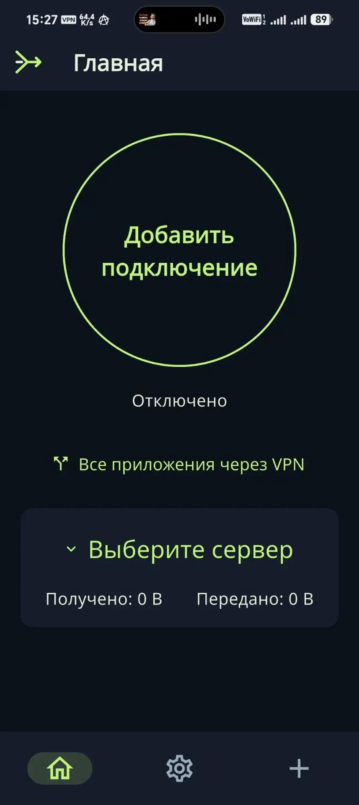

XIO
Свой VPN на своих серверах: один интерфейс, несколько протоколов. Сервер ставится по SSH, доступом управляете вы, а не подписка.
Что умеет
Полный цикл: от установки сервера до переключения протоколов на телефоне.
Свой сервер
Установка и обслуживание VPS по SSH — без чужих подписок и общего шлюза.
Управление доступом
Пользователи, отзыв доступа и экспорт конфигураций из одного интерфейса.
Несколько протоколов
Xray/REALITY, RIVET/S1, RIVET/H3, AWG и Cloak. Приоритет и автоматический перебор при неудаче.
Проверка после подключения
HTTPS-проверка (по умолчанию youtube.com) при включённом раздельном туннелировании.
Android-клиент
Раздельное туннелирование, системная тема, плитка быстрых настроек, 13 языков.
Кроссплатформенность
Android, Ubuntu, Windows (тестовая сборка) и исходники iOS-клиента.
Как это выглядит
Экраны Android-клиента: главный экран, настройки соединения и выбор протоколов.

Подключение, выбор сервера и счётчики трафика на одном экране.

Сайт для проверки, приоритетный протокол, время попытки.

Какие транспорты доступны на этой платформе.
Чего VPN не обещает
Честные ограничения, которые лучше знать до покупки VPS.
Провайдер видит входной IP
Даже при TLS оператор связи знает, к какому адресу вы подключаетесь.
Allowlist требует доступного ingress
Переименовать сайт в конфиге недостаточно — нужен работающий вход на сервер.
RIVET экспериментальный
Независимого аудита и доказанной неотличимости от браузера пока нет.
Не тестировался на сетях РФ
Поведение у конкретных операторов нужно проверять самостоятельно.
Платформы и протоколы
Статусы — честная карта зрелости, а не маркетинг.
APK для ARM64, ARMv7 и x86_64; ARM64 проверен на POCO X6 5G.
DEB и портативный архив, системные тесты на Ubuntu 24.04.
Тестовый ZIP: интерфейс проверен в Wine, драйвер ждёт теста на Windows.
Исходный проект Xcode; подписанного IPA нет.
Забрать XIO
Сборки и исходники открыты: можно поставить сервер, подключить телефон и проверить, как это работает у вашего оператора.
Лицензия: GPL-3.0-only для собственного кода; сторонние зависимости сохраняют свои лицензии.